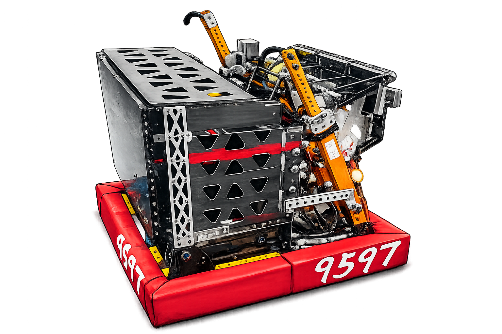
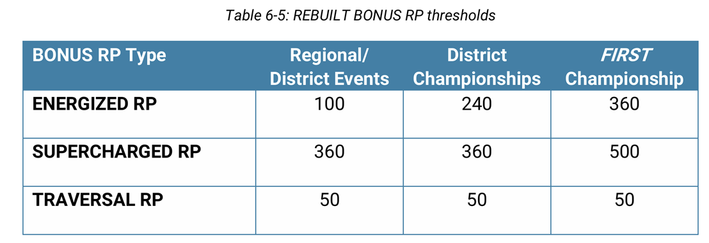
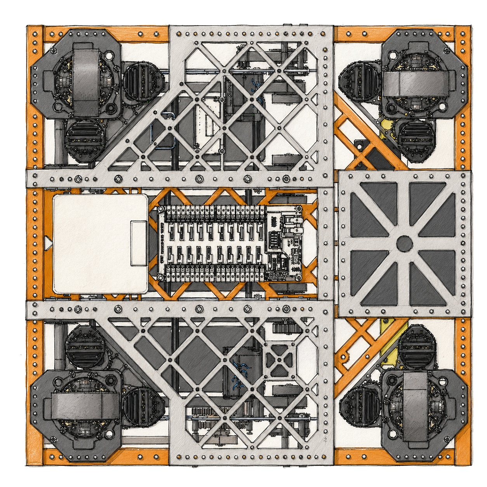
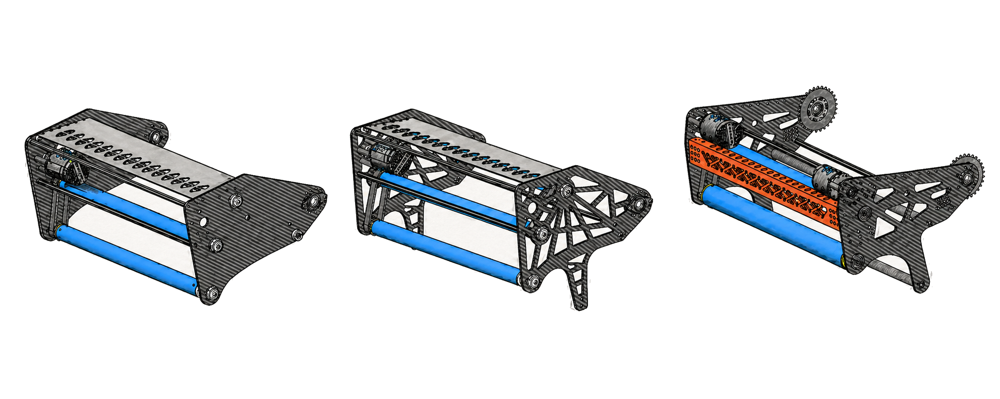
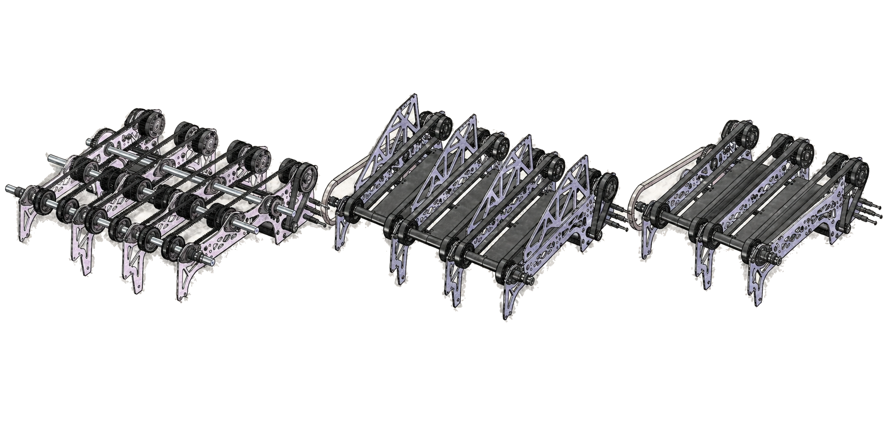
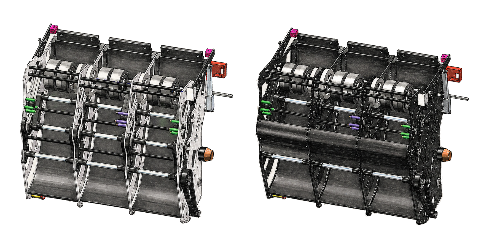
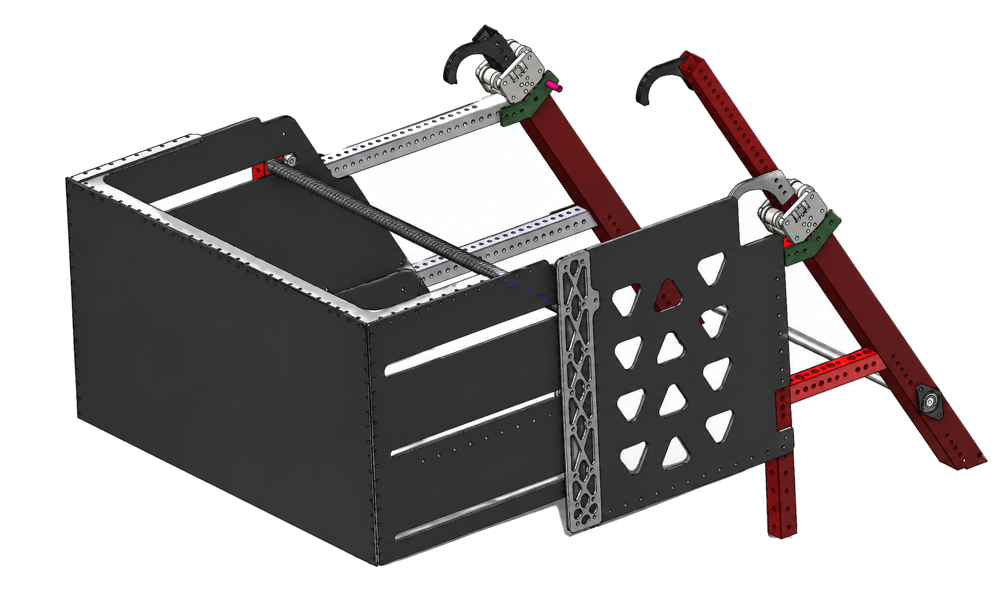
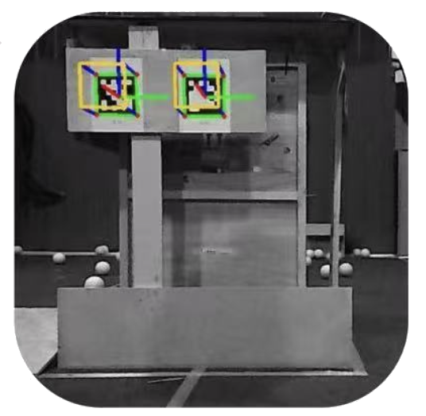
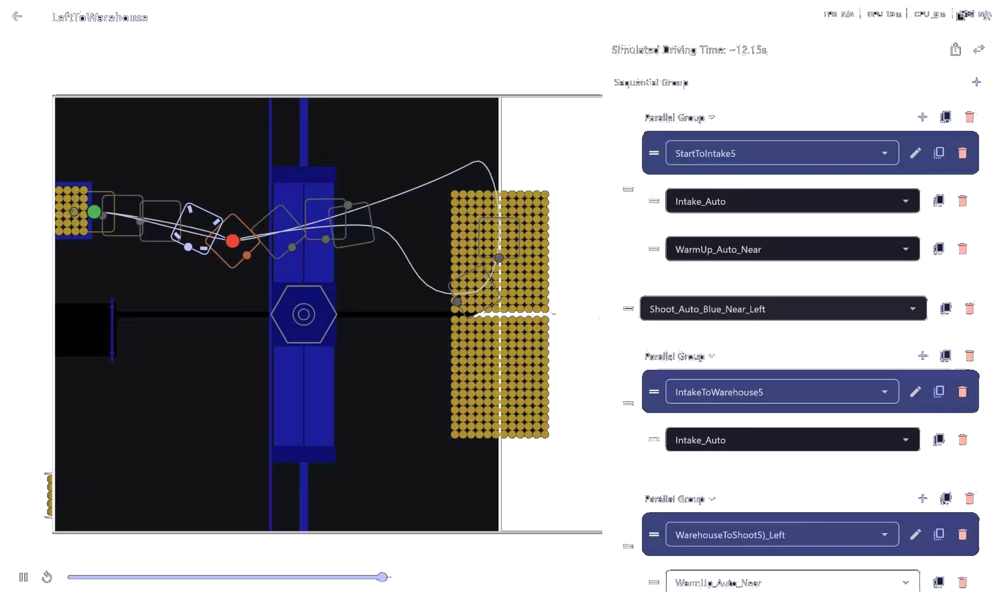
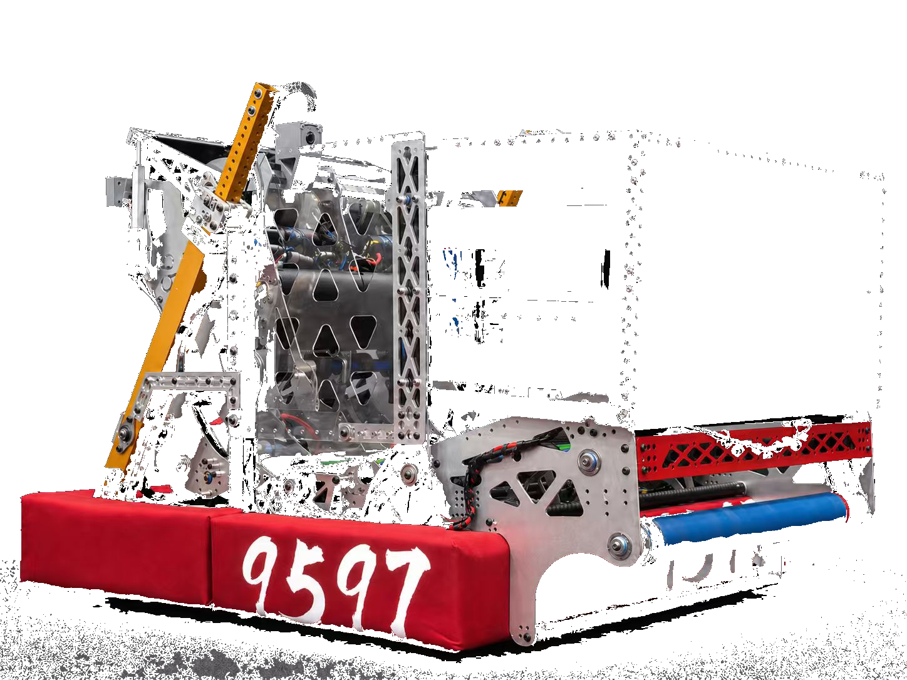

Fuel scoring, penalties, match phases, coordination, and robot constraints.
Engineering Notebook
Luban Robotics 9597 Technical Notes And Rules Analysis
A build-season notebook for the 2026 robot, collecting design decisions, subsystem iterations, software controls, strategy thinking, and competition rules analysis in one editable place.

Drive train, intake, feeder, column, shooter, hopper, and hook design notes.
Auto-aiming, autonomous path planning, PID control, and semi-automatic control.
Efficiency, repeated testing, regional learning, and future competition goals.
Chapter 01
Rules Analysis And Match Strategy

Kickoff Analysis
Fuel Scoring Accuracy
For a fuel to count as scored, it must fully enter the opening at the top of the hub and be processed through the system. Balls that bounce out or fail to fully enter the hub are not counted. Therefore, accuracy and consistency in shooting mechanisms are critical for maximizing scoring efficiency.
Penalty Avoidance
Penalties play a significant role in match outcomes and should be carefully avoided. Common penalties include entering protected opponent zones, interfering with robots during critical actions such as climbing, and violating human player restrictions, such as reaching beyond designated boundaries.
Minor violations, known as fouls, typically award around 5 points to the opposing alliance, while more serious violations, or technical fouls, can award approximately 15 points. Severe or repeated infractions may result in yellow or red cards.
Strategic Balance
Teams must balance scoring efficiency with defensive awareness and cooperation. High-probability scoring methods include short-range shooting into the hub and fast cycling of fuels.
Defensive strategies can include blocking opponent paths to the hub or disrupting their ability to collect fuel in the neutral zone, but defensive play must avoid protected areas.
Match Phases
A typical match has three phases: a 20-second autonomous period, a 2-minute and 20-second teleoperated period, and a final 30-second endgame. During teleop, hub activation alternates between alliances, requiring teams to adapt dynamically.
Team Coordination
Strong, high-scoring robots should focus on scoring, while partners support by supplying fuel or playing defense. Medium-level robots can balance scoring and assisting roles. Lower-scoring robots can still contribute through defense, transporting game pieces, or clearing space.
Robot Constraints
Robots must weigh no more than approximately 125 pounds, including battery and bumpers. At the start of the match, the robot must fit within the defined frame perimeter. Safety is a top priority, and all electrical and mechanical systems must follow official FRC regulations.
Chapter 02
Technical Design Notes

Mechanical Entry
Drive Train
The drive train is designed for stable movement, reliable field adaptability, and fast direction changes during defense and cycling. The layout keeps wiring accessible, supports quick repairs between matches, reduces unnecessary weight, and protects important components inside the frame.

Mechanical Entry
Intake
The intake subsystem is optimized for reliable ground pickup and fast cycling. We tested a three-roller version, but it added friction, complexity, and more failure points. The final two-roller method is simpler, lighter, easier to tune, and keeps the pickup method easy for students to maintain.

Iteration Entry
Feeder
The feeder uses a multi-lane roller system to move game pieces efficiently toward the launcher. Earlier PC separators created tight spacing where several balls could compress and jam. Opening the feeder path lets game pieces adjust naturally, reducing compression and improving flexibility, structure strength, and maintainability.

Iteration Entry
Column And Shooter
During testing, game pieces could get stuck near the X60 motor gap. We added a front blocker and reshaped the side PC sheets to guide pieces toward the center. This created a smoother path, reduced interruptions, increased throughput from 6 BPS to 13 BPS, and made feed rate and shooting speed more consistent.

Endgame Entry
Hopper And Hook
The hopper organizes game pieces before they enter the feeder using guided flow to reduce friction and keep handling consistent. The hook is designed to hang the robot during endgame with secure deployment, stable contact, and 100% accurate engagement.
Chapter 03
Programming And Control Notes

Vision Entry
Auto-Aiming
Auto-aiming uses camera feedback, calibrated scoring parameters, and controlled launcher output to help the robot align with scoring targets. The system calculates position and angle from real-time field information, improving shooting consistency from different locations.

Autonomous Entry
Autonomous And PID Control
Autonomous mode combines vision, odometry, planned arc paths, AprilTag markers, and PID control for more accurate positioning. The system corrects drift, keeps the robot aligned, supports high scoring paths, and gives the alliance wider strategic choices.

Control Entry
Semi-Automatic Control
Semi-automatic control gives drivers a reliable option between full manual operation and autonomous routines. It helps operators shoot without manual control, improving efficiency and consistency and increasing the number of cycles the robot can complete during each transition.
Chapter 04
Testing, Reflection, And Next Steps
Importance Of Efficiency
Work efficiency is extremely important in every task. We should arrange our steps reasonably and make good use of time. Repeated tests help us find hidden problems in advance, correct mistakes quickly, and make our work more stable and reliable.
Regional Learning
The regional event taught us the importance of reliability, simple robust systems, clear alliance communication, better match testing, and staying resilient when problems appear on the field.
Houston Goal
For Houston, our main goal is to secure a solid average overall performance. Because this is our first time taking part in this event, we prioritize learning, practical experience, observation, communication, and steady improvement.